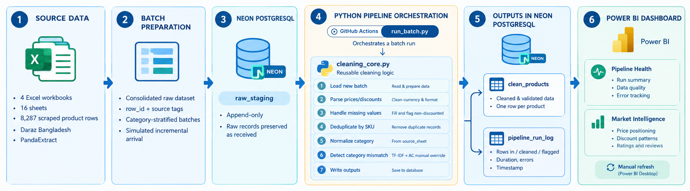
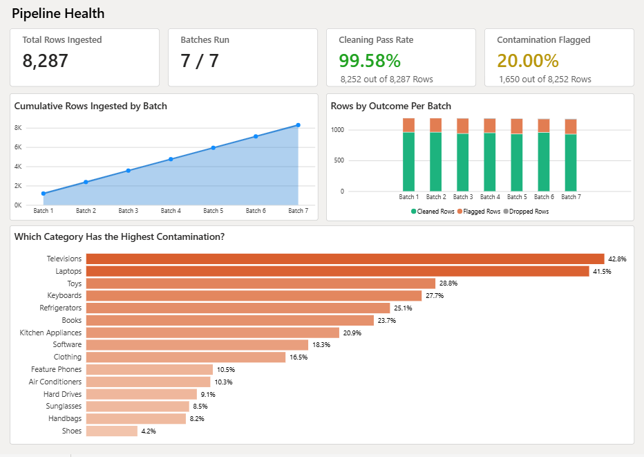
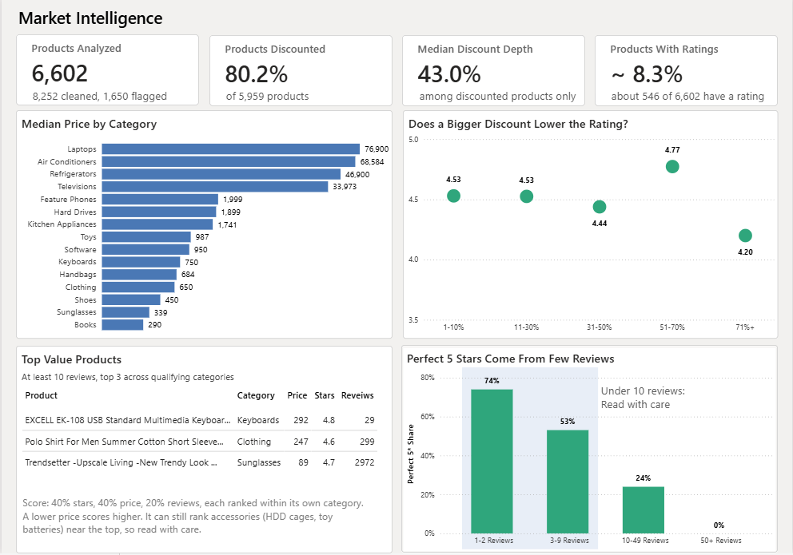

Daraz Market Intelligence Pipeline
Project Overview
I scraped 8,287 product listings from Daraz Bangladesh and built a pipeline that cleans them, catches products filed under the wrong category, and loads them into a cloud PostgreSQL database. A two-page Power BI dashboard sits on top, covering pipeline health and market intelligence on pricing, discounts, and ratings across 15 categories. A GitHub Actions workflow loads the data in batches on a schedule, so nobody has to run a script.
The scrape is a one-time snapshot. I split it into 7 batches, stratified by category, to simulate daily arrival.
Results at a Glance
Note on Defensibility: Flagged rows are not deleted. They stay in the clean table with a boolean flag, so every analysis decides on purpose whether to include or exclude them. Every rating-based number is shown with its sample size, because only about 8.3% of listings have ratings.
How the Pipeline Works

Pipeline architecture and data flowThree tables on Neon follow a raw, clean, and observability pattern. raw_staging holds data exactly as received, clean_products holds the output, and pipeline_run_log records rows in, cleaned, flagged, dropped, duration, and errors for every batch run.
Problem 1: Daraz's Category Field Can't Be Trusted
An air conditioner cleaning cover was filed under “Laundry & Cleaning”. No mapping can repair a field that is sometimes just wrong. I made the page a product was scraped from the source of truth for category (15 categories after merging Shirt and Cloth), and kept Daraz's own breadcrumb as a separate column.
Problem 2: Finding Products That Don't Belong
Category pages sometimes surface unrelated items, such as laser pointers in the TV sheet. I scored every listing by TF-IDF cosine similarity between its text and its own sheet's centroid, then flagged low scores. One global threshold failed because sheets behave differently:
- TV, Laptops: contamination shares almost no vocabulary with real listings, so thresholds were set at the histogram valley (0.20, 0.18).
- AC: score plus a manual override list of 25 reviewed rows handles contamination that reuses category words.
- Software, Books: a lower threshold (0.08) accounts for naturally varied legitimate titles.
The check also separates accessories from contamination: a cover made for air conditioners is kept, while a universal remote listing AC as one of five devices is flagged.
A Bug I Caught: Silent Drift in the Flag Rate
My first version refitted the TF-IDF vectorizer on every batch, which quietly changed the word weights and made the calibrated thresholds meaningless. Batch 1 flagged a different share than the full dataset. I fixed it by fitting the vectorizer once on the full raw data and only transforming per batch. After the fix, batch 1 flagged 19.4% against 20.0% overall.
I also tested capping the vectorizer at 5,000 features. It dropped the flagged count from 1,650 to 1,363, because the thresholds assume the full vocabulary, so I rolled it back.
Automation
GitHub Actions runs the pipeline four times a day and can be started manually. A load_all option loads every pending batch at once, a concurrency group prevents overlapping runs, and the database connection string lives in a GitHub secret. Across 8 runs, each finished in under 3 minutes, most in about 40 seconds.
Power BI Dashboard

Page 1 — Pipeline HealthPage 1 covers ingestion volume, cleaning pass rate and contamination rate per batch, cumulative rows loaded, and flag rate by category.

Page 2 — Market IntelligencePage 2 covers pricing, discounting, and ratings across 15 categories.
Key Insights
Finding 1: Excluding the 1,650 flagged rows moves the median TV price from 17,200 to 32,250 Taka (+87.5%), Laptops by +30.8%, and Refrigerators by +23.5%. Every other category moves less than 10%.
Finding 2: Discounting is the norm, but it splits by price tier. 80.2% of core products show a discount, with a median depth of 43%. Sunglasses are 99.6% discounted at a median 60% off, while Refrigerators are 44.2% discounted at a median of only 3.5%.
Finding 3: Rating data is thin. Only 8.3% of products have a real rating, and 75% of products rated 4.8 or higher have fewer than 10 reviews.
Method notes: Medians are used instead of means because prices are heavily skewed. Headline price charts use main products only; flagged rows and accessories are excluded. A rating counts as real only with at least 1 review and stars above 0.
Limitations
- The data is a one-time scrape, so it shows no price changes over time. Daily arrival is simulated.
- Thresholds were calibrated by reading histograms and sampling by hand.
- Only about 12% of listings have ratings, so rating findings rest on a smaller subset.
- Power BI refresh is manual, since scheduled refresh needs Pro and a gateway.